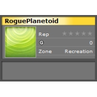
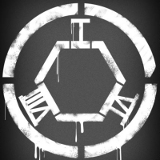

CESPage.com Xbox Weekly Update Ten
Xbox 360 Countdown Continues, My Gamer Card and Hex 168
By CESPage.com Xbox, Published 23th October 2005

Xbox 360 Countdown Continues
With under a month to go to the North American launch and just over a month to the European launch the Xbox 360 is getting closer. With the launch of the new-look Xbox.com this gives gamers information about the Xbox 360 hardware and game titles available at launch and later.
Accessory in Focus
From now until launch CESPage.com Xbox each week will focus on the accessories that will be available for the Xbox 360 when it launches in late November / early December, this week's accessory is the Xbox 360 Wireless Controller. The Xbox 360 Wireless Controller is the first time that a console has shipped with a first party wireless controller in the box at launch. The controller features a proprietary wireless technology that allows it to work up to 10 metres from the console. The controller can even be used to turn the console off also with the Xbox Guide button which also accesses the feature on the console for Friends list and other player global settings. It features six analogue buttons with 256 levels of sensitivity, two analogue pressure-point triggers, two vibration feedback motors, and one eight-way directional pad. There are also new left and right shoulder buttons are designed for ease of use that replaces the black and white buttons from the first Xbox.
My Gamer Card
This is a brand new feature on Xbox.com and is also the identity used on the Xbox 360 to show the games played, achievements earned, reputation and gamerscore.
On Xbox.com right now you can create a gamer card, this contains the gamer tile which is a picture that will be you identity on the Xbox 360 and Xbox.com.
Also there is the gamer motto which can be a choice phrase or quotation and the gamer zone which describes the type of gamer you are whether Recreation, Pro,
Family or Underground there should be a zone for you. The Achievements are those obtained whilst playing games on the Xbox 360 this can be a trophy or skill
obtained in a game, you will also be able to compare your achievements with other peoples to see who really is better at a game.
You will also be able to view your Friends List online which is now the same for UK and US visitors to Xbox.com you can even see if there are any pending messages
or invites plus see the online status of your friends too.
One of the best things about the Gamer Card is the gamer URL and the ability to put the Gamer Card on your website and blog, to do the latter you just need to use
the code below, and replace GamerTag with your Gamertag and put it in the coding of your website.
<iframe src="http://gamercard.xbox.com/Gamertag.card" scrolling="no" frameBorder="0" height="140" width="204"></iframe>
Hex 168
Visitors to www.hex168.com are introduced to the fictional specialist in the "Hex 168" phenomena Dr. Jason Q. Lutz and are enlisted as fellow truth-seekers in the
quest to research and catalogue this anomalous global occurrence. Entrants are asked to submit photos or short videos capturing manifestations of the power of hex
which are then posted on the site for public voting. Entrants have until the 4th of November to submit entrees and voters have until the 7th of November to rate each
individual evidence submissions as "Hexed" or Not, this determines the semi-finalists. A panel of pre-qualified judges will then determine the grand prize winners in
each category.
There will be 360 grand prize winners will be chosen from the competition. With the Grand Prize being a gamers' dream come true with a three day/two night VIP trip
to an Xbox 360 event in November, an Xbox 360 six days before launch plus Perfect Dark Zero, Project Gotham Racing 3 and Kameo: Elements of Power plus one year Gold
membership to Xbox Live, this contest is open to legal residents of the 50 United States.
You can visit the Hex 168 website at www.hex168.com